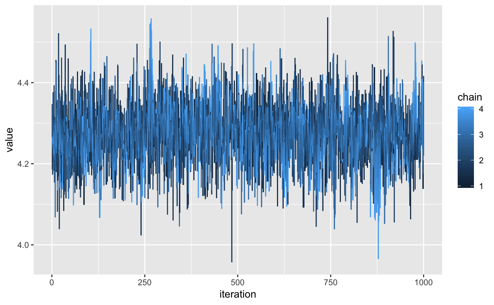
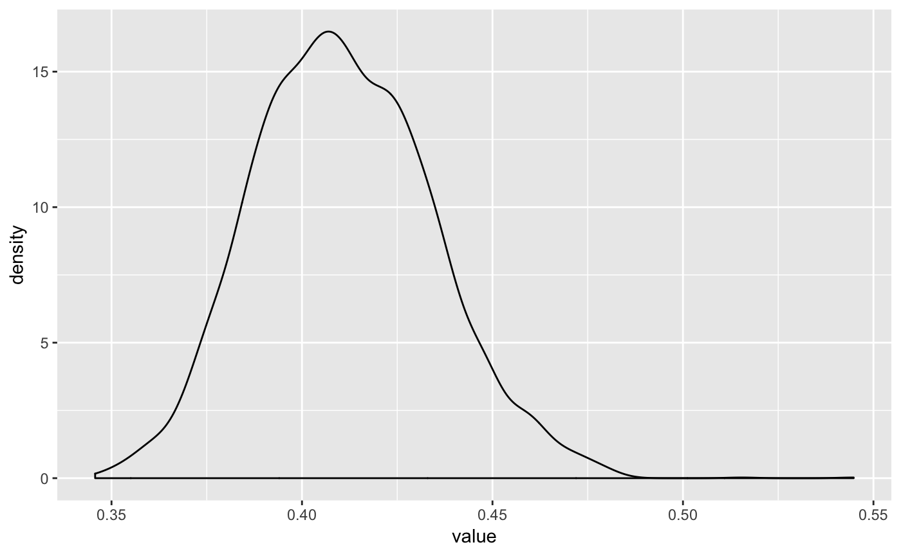
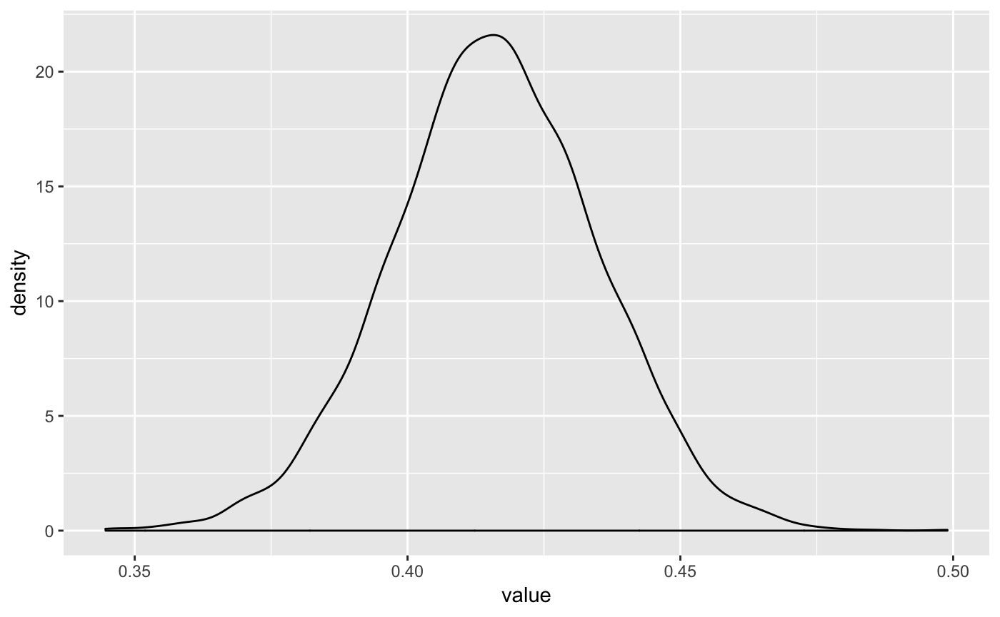
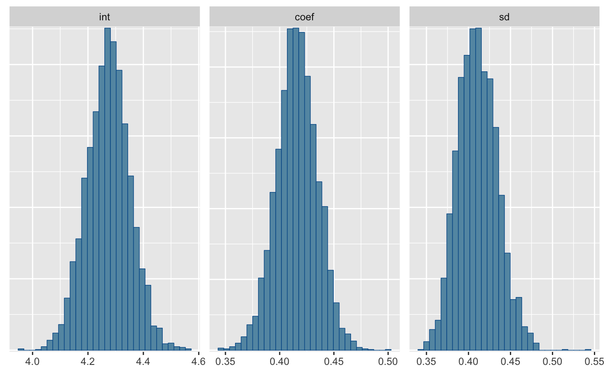
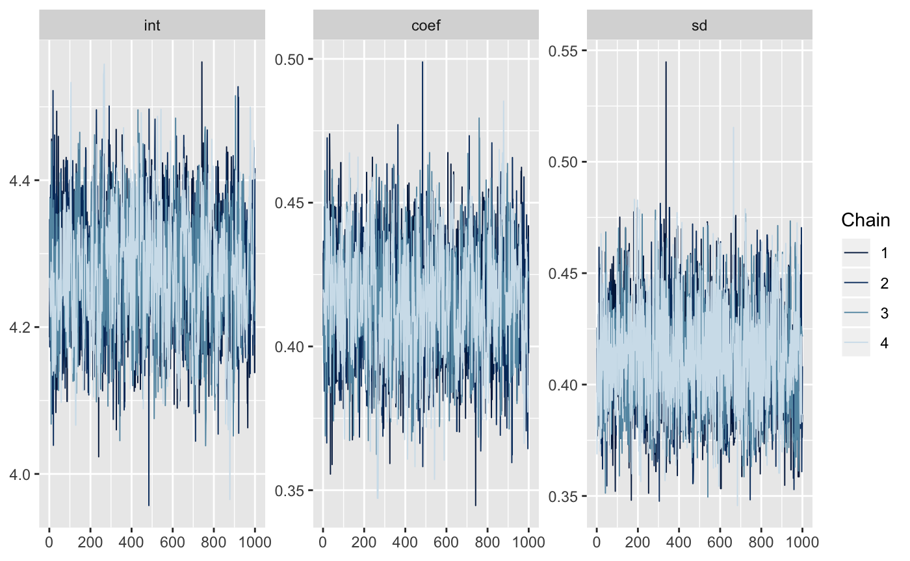

Using mmcc with greta
Nicholas Tierney
2018-08-03
using-mmcc-w-greta.Rmdreticulate::use_virtualenv("r-tensorflow")
# ignore this ^^ for the moment
library(greta)
#>
#> Attaching package: 'greta'
#> The following objects are masked from 'package:stats':
#>
#> binomial, poisson
#> The following objects are masked from 'package:base':
#>
#> %*%, backsolve, beta, colMeans, colSums, diag, forwardsolve,
#> gamma, rowMeans, rowSums, sweep, tapply
# data
x <- as_data(iris$Petal.Length)
y <- as_data(iris$Sepal.Length)
# variables and priors
int <- normal(0, 1)
coef <- normal(0, 3)
sd <- student(3, 0, 1, truncation = c(0, Inf))
# operations
mean <- int + coef * x
# likelihood
distribution(y) <- normal(mean, sd)
# defining the model
m <- model(int, coef, sd)
# sampling
draws <- mcmc(m,
n_samples = 1000,
chains = 4)
#>
#> chain 1/4
#>
#> chain 2/4
#>
#> chain 3/4
#>
#> chain 4/4We can get a one-line summary of the model with glance
library(mmcc)
#> Loading required package: broom
glance(draws)
#> n_chains n_iter n_var ess_lower ess_upper rhat_lower rhat_upper
#> 1 4 1000 3 2202.699 3119.066 1.002343 1.007604We can also get a one-coefficient per row summary using tidy:
tidy(draws)
#> parameter mean sd 2.5% median 97.5%
#> 1: int 4.2736855 0.07834333 4.1211185 4.2746592 4.4261197
#> 2: coef 0.4159039 0.01896392 0.3784770 0.4158914 0.4522548
#> 3: sd 0.4109504 0.02338949 0.3688096 0.4097621 0.4598336Now we can neaten up the draws with mcmc_to_dt to facilitate plotting
neat_draws <- mmcc::mcmc_to_dt(draws)
neat_draws
#> iteration chain parameter value
#> 1: 1 1 int 4.1861038
#> 2: 2 1 int 4.2272530
#> 3: 3 1 int 4.2348452
#> 4: 4 1 int 4.2048440
#> 5: 5 1 int 4.3188853
#> ---
#> 11996: 996 4 sd 0.3866304
#> 11997: 997 4 sd 0.3866304
#> 11998: 998 4 sd 0.3866304
#> 11999: 999 4 sd 0.3831778
#> 12000: 1000 4 sd 0.3831778
library(ggplot2)
ggplot(neat_draws[parameter == "int"],
aes(x = iteration,
y = value,
colour = chain)) +
geom_line()


Or we can use some examples from bayesplot:


